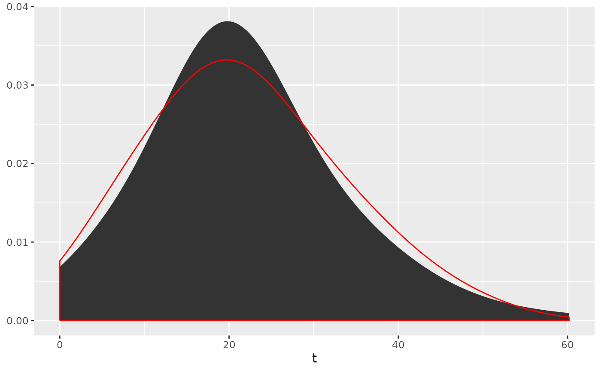
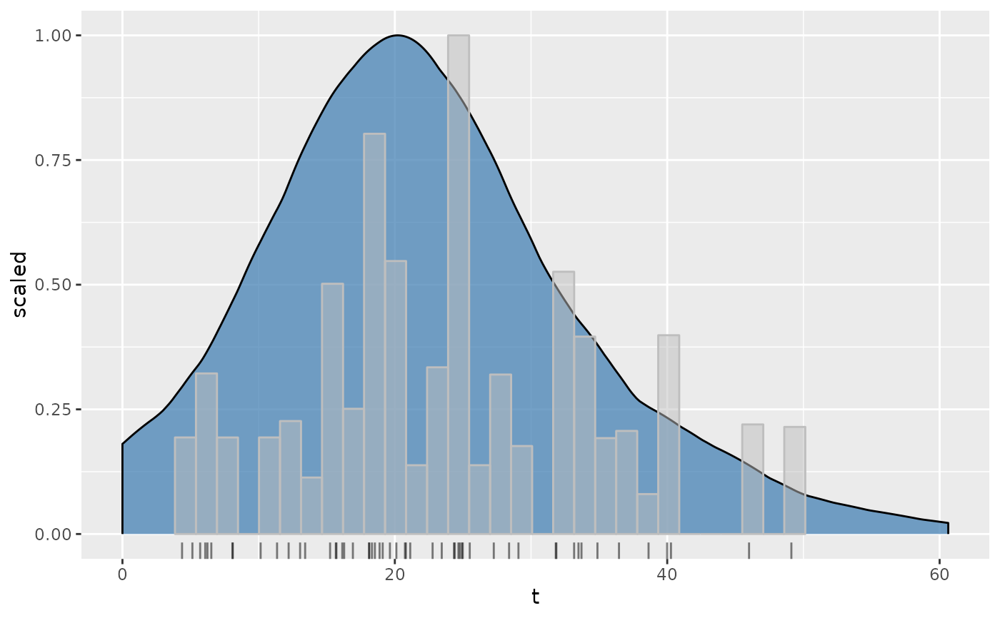

Modification of ggplot2::stat_density() for kernel density estimates using a combination of the
Botev (2010) bandwidth selector and the Abramson (1982) adaptive kernel
bandwidth modifier.
Usage
stat_aKDE(
mapping = NULL,
data = NULL,
stat = "DensityAdaptive",
geom = "area",
position = "stack",
...,
from = NA,
to = NA,
bw = NA,
adjust = 1,
kernel = "gaussian",
n = 512,
adaptive = TRUE,
na.rm = FALSE,
bounds = c(-Inf, Inf),
show.legend = NA,
orientation = NA,
inherit.aes = TRUE
)
geom_aKDE(
mapping = NULL,
data = NULL,
stat = "DensityAdaptive",
position = "identity",
...,
na.rm = FALSE,
orientation = NA,
show.legend = NA,
inherit.aes = TRUE,
outline.type = "upper"
)Source
Algorithm for adaptive kernel is modified from IsoplotR. The
algorithm for the optimal kernel bandwidth is from provenance::botev().
Arguments
- mapping
Set of aesthetic mappings created by
aes(). If specified andinherit.aes = TRUE(the default), it is combined with the default mapping at the top level of the plot. You must supplymappingif there is no plot mapping.- data
The data to be displayed in this layer. There are three options:
If
NULL, the default, the data is inherited from the plot data as specified in the call toggplot().A
data.frame, or other object, will override the plot data. All objects will be fortified to produce a data frame. Seefortify()for which variables will be created.A
functionwill be called with a single argument, the plot data. The return value must be adata.frame, and will be used as the layer data. Afunctioncan be created from aformula(e.g.~ head(.x, 10)).- geom, stat
Use to override the default connection between
geom_density()andstat_density(). For more information about overriding these connections, see how the stat and geom arguments work.- position
A position adjustment to use on the data for this layer. This can be used in various ways, including to prevent overplotting and improving the display. The
positionargument accepts the following:The result of calling a position function, such as
position_jitter(). This method allows for passing extra arguments to the position.A string naming the position adjustment. To give the position as a string, strip the function name of the
position_prefix. For example, to useposition_jitter(), give the position as"jitter".For more information and other ways to specify the position, see the layer position documentation.
- ...
Other arguments passed on to
layer()'sparamsargument. These arguments broadly fall into one of 4 categories below. Notably, further arguments to thepositionargument, or aesthetics that are required can not be passed through.... Unknown arguments that are not part of the 4 categories below are ignored.Static aesthetics that are not mapped to a scale, but are at a fixed value and apply to the layer as a whole. For example,
colour = "red"orlinewidth = 3. The geom's documentation has an Aesthetics section that lists the available options. The 'required' aesthetics cannot be passed on to theparams. Please note that while passing unmapped aesthetics as vectors is technically possible, the order and required length is not guaranteed to be parallel to the input data.When constructing a layer using a
stat_*()function, the...argument can be used to pass on parameters to thegeompart of the layer. An example of this isstat_density(geom = "area", outline.type = "both"). The geom's documentation lists which parameters it can accept.Inversely, when constructing a layer using a
geom_*()function, the...argument can be used to pass on parameters to thestatpart of the layer. An example of this isgeom_area(stat = "density", adjust = 0.5). The stat's documentation lists which parameters it can accept.The
key_glyphargument oflayer()may also be passed on through.... This can be one of the functions described as key glyphs, to change the display of the layer in the legend.
- from, to
the left and right-most points of the grid at which the density is to be estimated
- bw
the bandwidth of the KDE. If
NULL,bwwill be calculated automatically using the algorithm by Botev et al. (2010).- adjust
A multiplicate bandwidth adjustment. This makes it possible to adjust the bandwidth while still using the a bandwidth estimator. For example,
adjust = 1/2means use half of the default bandwidth.- kernel
Kernel. See list of available kernels in
density().- n
number of equally spaced points at which the density is to be estimated, should be a power of two, see
density()for details- adaptive
logical flag controlling if the adaptive KDE modifier of Abramson (1982) is used
- na.rm
If
FALSE, the default, missing values are removed with a warning. IfTRUE, missing values are silently removed.- bounds
Known lower and upper bounds for estimated data. Default
c(-Inf, Inf)means that there are no (finite) bounds. If any bound is finite, boundary effect of default density estimation will be corrected by reflecting tails outsideboundsaround their closest edge. Data points outside of bounds are removed with a warning.- show.legend
logical. Should this layer be included in the legends?
NA, the default, includes if any aesthetics are mapped.FALSEnever includes, andTRUEalways includes. It can also be a named logical vector to finely select the aesthetics to display.- orientation
The orientation of the layer. The default (
NA) automatically determines the orientation from the aesthetic mapping. In the rare event that this fails it can be given explicitly by settingorientationto either"x"or"y". See the Orientation section for more detail.- inherit.aes
If
FALSE, overrides the default aesthetics, rather than combining with them. This is most useful for helper functions that define both data and aesthetics and shouldn't inherit behaviour from the default plot specification, e.g.borders().- outline.type
Type of the outline of the area;
"both"draws both the upper and lower lines,"upper"/"lower"draws the respective lines only."full"draws a closed polygon around the area.- weight
numeric vector of non-negative observation weights, hence of same length as
x. The defaultNULLis equivalent toweights = rep(1/nx, nx)wherenxis the length of (the finite entries of)x[]. Ifna.rm = TRUEand there areNA's inx, they and the corresponding weights are removed before computations. In that case, when the original weights have summed to one, they are re-scaled to keep doing so. Ignored ifadaptiveisTRUE.
Examples
data("sample")
example <- age_ICP(sample, zeta = c(0.1188, 0.0119))
# IsoplotR::kde(example$ages$t)
ggplot2::ggplot(data = example$ages, mapping = ggplot2::aes(x = t)) +
stat_aKDE(adaptive = TRUE) +
stat_aKDE(adaptive = FALSE, color = "red", fill = NA)
#> Warning: Removed 3 rows containing non-finite outside the scale range
#> (`stat_density_adaptive()`).
#> Warning: Removed 3 rows containing non-finite outside the scale range
#> (`stat_density_adaptive()`).

ggplot2::ggplot(
data = example$ages,
mapping = ggplot2::aes(x = t, weight = t / st)
) +
geom_aKDE(
ggplot2::aes(y = ggplot2::after_stat(scaled)),
kernel = "epanechnikov", fill = "steelblue", alpha = .75
) +
ggplot2::geom_histogram(
ggplot2::aes(y = ggplot2::after_stat(ncount)),
color = "grey", fill = "grey", alpha = .5
) +
ggplot2::geom_rug(alpha = 0.5)
#> Warning: Removed 3 rows containing non-finite outside the scale range
#> (`stat_density_adaptive()`).
#> `stat_bin()` using `bins = 30`. Pick better value with `binwidth`.
#> Warning: Removed 3 rows containing non-finite outside the scale range (`stat_bin()`).
